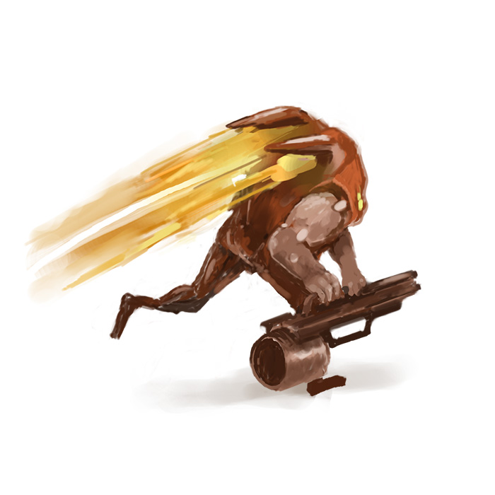

50 faction ideas for the game
With Stormgate beta just around the corner, we wanted to share some of our faction ideas! There are just 2 officially revealed so far, how many more will there be?
We've also shared some fan drawings for the actual revealed faction, the Human Vanguard, intermittently throughout. You can decide whose ideas are better.
Without further ado, here are 50 faction ideas for Stormgate.
1. Dwarves & Elves — Everyone knows dwarves and elves are besties so why not put them together in a faction? They slot right into Stormgate's current faction roster of advanced robotics and malevolent alien monsters.
2. Plants — Plants are cool and topical. They also remind me of Lord of the Rings. Also cool: vines, roots, leaves, bark, seeds, fruit, etc.
3. Angels — Stormgate currently has humans, it has demons—why not angels? Ever see “God, the Devil and Bob?” It got canceled after one season but it'd be cool if the game were more like that.
4. Bizarro World — Units stolen from other IP like Star Wars, Ninja Turtles, Pokémon, Beauty and the Beast, Harry Potter, John Travolta, etc. I think it'd be cool to see them all working together.
5. Rocks — The idea here is that you'd have rocks. Might not be for everyone but the rock mains know who they are.
Meet B.O.B., the human worker unit.
I survived an explosion and am just happy to be here—can't you tell by my non-creepy smile?
6. Applesauce — Applesauce is great and I'm pretty sure you need to put things that people actually like in the game.
7. Bankrupt Car Companies — Oldsmobile, Mercury, Pontiac, you name it. I guess you could have them shooting little guns out their window, some would just run people over. Kinda cool? I need more time on this one.
8. Human sub-faction — They'd be like the Human Vanguard that's already in Stormgate but just slightly different. Like maybe these guys are taller and have beards.
9. Snakes — A snake faction.
10. Zombies — There hasn't been much zombie stuff in a while so it's the perfect time to start the engine again. You can do a cool take where maybe the zombies are smart and can run fast.
Human buildings
We look SO much better in game
11. Xel'Naga — Maybe this has been brought up before but why not just put the Xel'Naga in the game?
12. Naga — Warcraft 3 never added the Naga and Blizzard never made Warcraft 4 so it's only fair that the Naga get to be used in Stormgate.
13. Canceled Hollywood Actors — You might think this one's a joke but all those guys have to go somewhere. They can't just be living on the street.
14. Dinosaurs — There isn't a person on the planet that doesn't love dinosaurs. Tier 1 would be those tiny raptors from The Lost World that jump on the guy and peck at him and eat him. Then tier 2 would be a triceratops, or stega, then tier 3 the Tyrannosaur. The pterodactyls would be the flying units.
15. Protoss — Blizzard isn't using it anymore so Stormgate should.
Lancer
Grab a lance and take a stance!
16. Luxury Items — All the things people can't afford like Teslas, small islands, food, clothes, etc. It'd be fun and people would want to play it because it'd fulfill a really great fantasy.
17. Long Armed People — Long armed people like the aliens behind the smoky glass in Arrival.
18. The Expendables — Stallone's popular franchise turned into a faction. You could have Arnold, Willis, Stallone, Harrison Ford, and then the young generation like Brad Pitt, Leonardo DiCaprio, George Clooney, etc.
19. Nostalgia — You could design the race however you want but it'd be pixel art. Pixel art in a 3D game would be interesting, like the movie Pixels.
20. Sharks — There are so many ways to go with this but you'd probably want to focus on the sharks that eat people.
Medtech
Don't worry, we can fix this.
21. Dead People — Bring them back from the dead for an encore: Frank Sinatra, Osama Bin Laden, Jesus Christ, Ezra Miller, Zach Braff...
22. Amazons — I can't think of a more popular thing in pop culture right now. Diablo 2 had them, then we had Wonder Woman and Woman 2.
23. Fortune 500 Companies — They get a lot of bad PR and unfortunately have a bad rep so we should show them off in Stormgate.
24. Robots — Just whatever the devs can think of here. I'm leaving this one open. Be creative, Frost Giant!
25. Competing RTS Faction — Some faction from a modern RTS that will be competing with Stormgate. Take their faction and do it better than them. Sounds obvious but it could do the trick.
Hedgehog
FHUW-FHUW-FHUW-FHUW.
26. Zerg — Zerg should be in Stormgate. I don't see why not, some of the devs worked on StarCraft.
27. Wind — A wind faction.
28. Magic: The Gathering — Steal ideas from Magic: The Gathering and put them in Stormgate. Be subtle about it but call it Magic: The Gathering and have all the different colored decks.
29. Failed Disney Live Action Remakes — A failed Disney remakes faction starring all the memorable things from the live action Mulan. It's a great movie and it's unfair that it didn't make a lot of money, so it should be in Stormgate.
30. Clouds — Cumulus, stratus, nimbostratus.
Vulcan
Ya just stand there...
Ya just stand there...
31. IKEA — Another thing that people like that should be in the game. There's also a lot to pull from and different sections to it, so you can go in more of a bath & bedding direction or a lights & fixtures, with some Swedish meatballs and weekend diarrhea on the way out.
32. Sports — A sports faction would be cool. All the different sports, or maybe it randomly selects 1 sport for you to play as at the start of the game. I think golf would be fun.
33. Butter / Not Butter — A fun faction where some units are like butter and some aren't butter but look like butter. The butter would deal high damage and the not butter wouldn't. Your opponent would have to figure it out.
34. Religion — All the different religions working together.
35. Xenomophs / Ultramorphs / Cayomorphs / Brainomorphs — Just a take on Colin and Greg Strause's xenomorph concept from Alien vs Predator: Requiem.


Beyond being a beautiful unit, the vulcan has 3 core strengths.
36. Music — A musical faction where you'd have to type notes and create melodic tunes to do anything in the game. You'd have to be extremely gifted at music to get anywhere with this faction, which would make it really unique.
37. Ghosts — I've never heard anyone say that ghosts are lame.
38. Groceries — Line your base with collard greens, throw canned food, build a clumpy oatmeal moat, and feed your army with dog food.
39. Planet of the Apes — An intelligent apes faction. Build trees, swing from tree to tree, eat bananas, throw feces, and just pound the shit out of stuff.
40. Paris — The goal would be to build Paris. When your opponent comes to attack, they're insulted to death. This faction would have the best cheese.
Atlas - pilot mode
Vehicle weapons test 7.3.61
41. Ninjas — They'd have to be designed like the ninjas from 3 Ninjas, with the plastic visors and no actual fighting skills.
42. Science — A scientific faction.
43. Crayola Crayons — A crayola crayons faction where each color would do something different. Preferably a box of 64 so you'd get colors like macaroni and cheese and strawberry shortcake.
44. Spiders — Overrun your opponent with millions of spiders. Or just sit in the corner and do nothing.
45. Old School Angels — A classic cherub faction where it's children with bird wings.
Atlas - deployed mode
Vehicle weapons test 7.4.61
46. Pride — A happy faction that doesn't attack but the units have 1,000x more hit points than the other factions'.
47. Radio Shack — Everything's expensive and nothing works. The buildings sit idle, the units don't respond to commands, and eventually your structures fold into the ground and you lose the game.
48. Calculator / Coffee — A calculator and coffee faction. It would be an interesting challenge to try and make these two ideas work together in Stormgate.
49. Priests — All your priest units are crying in jail and you can only use your hero Pope unit in battle. He's pretty strong though, so it balances out.
50. Tax Bill — A tax payment faction where you go through the steps of paying your taxes every game. First input your personal info, then income, then make sure you have all the numbers in the right place and boxes filled in.
That's it for now. We have so many more ideas but just wanted to share our best ones.
This was a fun exercise in mania while we wait for all the stuff Frost Giant has planned for Stormgate. Just as long as they use some of the ideas shared here, we'll be content.